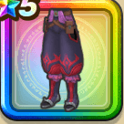

冥獣の装束下
攻略班 7.5点 / 毒耐性+5%イオ属性耐性+5%悪魔系への耐性+5%ドルマ属性ダメージ+3%
くわしい特徴
【レベル別習得スキル】 Lv1毒耐性+5% Lv8イオ属性耐性+5% Lv10さいだいMP+5 Lv15ドルマ属性ダメージ+3% Lv18悪魔系への耐性+5% Lv20【レンジャー】さいだいMP+5 Lv23さいだいHP+5 Lv25守備力+7 【限界突破スキル】 1凸呪い耐性+5% 2凸守備力+2 3凸すばやさ+5 4凸さいだいHP+5

攻略班 7.5点 / 毒耐性+5%イオ属性耐性+5%悪魔系への耐性+5%ドルマ属性ダメージ+3%
【レベル別習得スキル】 Lv1毒耐性+5% Lv8イオ属性耐性+5% Lv10さいだいMP+5 Lv15ドルマ属性ダメージ+3% Lv18悪魔系への耐性+5% Lv20【レンジャー】さいだいMP+5 Lv23さいだいHP+5 Lv25守備力+7 【限界突破スキル】 1凸呪い耐性+5% 2凸守備力+2 3凸すばやさ+5 4凸さいだいHP+5